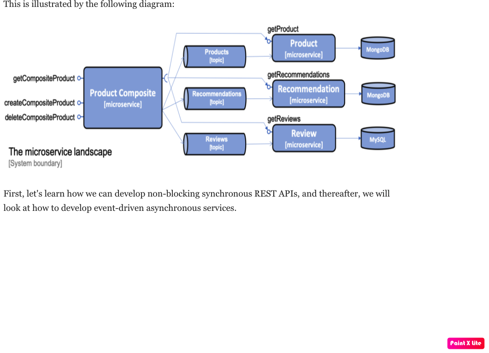

1. What do we build
1.1. Product service
The product service manages product information and describes each product with the following attributes:
-
Product ID
-
Name
-
Weight
1.2. Review service
The review service manages product reviews and stores the following information about each review:
-
Product ID
-
Review ID
-
Author
-
Subject
-
Content
1.3. Recommendation service
The recommendation service manages product recommendations and stores the following information about each recommendation:
-
Product ID
-
Recommendation ID
-
Author
-
Rate
-
Content
1.4. Product composite service
The product composite service aggregates information from the three core services and presents information about a product as follows:
Product information, as described in the product service A list of product reviews for the specified product, as described in the review service A list of product recommendations for the specified product, as described in the recommendation service
2. Start ALL
java -jar microservices/product-composite-service/build/libs/*.jar &
java -jar microservices/product-service/build/libs/*.jar &
java -jar microservices/recommendation-service/build/libs/*.jar &
java -jar microservices/review-service/build/libs/*.jar &
To get the JSON response pretty-printed, you can use the jq tool
curl http://localhost:7000/product-composite/1 -s | jq .3. STOP ALL
----ß
kill $(jobs -p)
----4. Find application used specifing port
lsof -i:70025. Curl with prety
curl http://localhost:7000/product-composite/1 -s | jq .6. Preventing slow lookup of the localhost hostname
With effect from macOS Sierra, looking up the hostname that’s used by the localhost in a Java program on a macOS can take a very long time, that is, 5 seconds, making tests very slow. The problem seems to be fixed when using macOS Mojave, but if you are using an older version of macOS, this can easily be fixed.
First, you need to verify whether the problem affects you by downloading a small tool from GitHub and running it:
git clone https://github.com/thoeni/inetTester.git
java -jar inetTester/bin/inetTester.jar
jonny@jonnys-MacBook-Air from-git $ java -jar inetTester/bin/inetTester.jar
Calling the hostname resolution method...
Method called, hostname jonnys-MacBook-Air.local, elapsed time: 13 (ms)
If you have a response time of 5 seconds, then you have a problem!
The solution is to edit the /etc/hosts file and add your local hostname, which is Magnuss-Mac.local in the preceding example, after localhost; for example:
127.0.0.1 localhost Magnuss-Mac.local
::1 localhost Magnuss-Mac.local7. Adding semi-automated tests of a microservice landscape
Being able to automatically test each microservice in isolation is, of course, very useful, but insufficient!
We need a way to automatically test all of our microservices to ensure that they deliver what we expect!
For this reason, I have written a simple bash script that can perform calls to a RESTful API using curl and verify its return code and parts of its JSON response using jq. The script contains two helper functions, assertCurl() and assertEqual(), to make the test code compact and easier to read.
For example, making a normal request and expecting 200 as the status code, as well as asserting that we get back a JSON response that returns the requested productId along with three recommendations and three reviews, looks like the following:
# Verify that a normal request works, expect three recommendations and three reviews
assertCurl 200 "curl http://$HOST:${PORT}/product-composite/1 -s"
assertEqual 1 $(echo $RESPONSE | jq .productId)
assertEqual 3 $(echo $RESPONSE | jq ".recommendations | length")
assertEqual 3 $(echo $RESPONSE | jq ".reviews | length")
Verifying that we get 404 (Not Found) back as an HTTP response code (when we try to look up a product that doesn't exist) looks as follows:
# Verify that a 404 (Not Found) error is returned for a non-existing productId (13)
assertCurl 404 "curl http://$HOST:${PORT}/product-composite/13 -s"8. Semi Automatic Test Script
#!/usr/bin/env bash
#
# Sample usage:
#
# HOST=localhost PORT=7000 ./test-em-all.bash
#
: ${HOST=localhost}
: ${PORT=7000}
function assertCurl() {
local expectedHttpCode=$1
local curlCmd="$2 -w \"%{http_code}\""
local result=$(eval $curlCmd)
local httpCode="${result:(-3)}"
RESPONSE='' && (( ${#result} > 3 )) && RESPONSE="${result%???}"
if [ "$httpCode" = "$expectedHttpCode" ]
then
if [ "$httpCode" = "200" ]
then
echo "Test OK (HTTP Code: $httpCode)"
else
echo "Test OK (HTTP Code: $httpCode, $RESPONSE)"
fi
else
echo "Test FAILED, EXPECTED HTTP Code: $expectedHttpCode, GOT: $httpCode, WILL ABORT!"
echo "- Failing command: $curlCmd"
echo "- Response Body: $RESPONSE"
exit 1
fi
}
function assertEqual() {
local expected=$1
local actual=$2
if [ "$actual" = "$expected" ]
then
echo "Test OK (actual value: $actual)"
else
echo "Test FAILED, EXPECTED VALUE: $expected, ACTUAL VALUE: $actual, WILL ABORT"
exit 1
fi
}
set -e
echo "HOST=${HOST}"
echo "PORT=${PORT}"
# Verify that a normal request works, expect three recommendations and three reviews
assertCurl 200 "curl http://$HOST:$PORT/product-composite/1 -s"
assertEqual 1 $(echo $RESPONSE | jq .productId)
assertEqual 3 $(echo $RESPONSE | jq ".recommendations | length")
assertEqual 3 $(echo $RESPONSE | jq ".reviews | length")
# Verify that a 404 (Not Found) error is returned for a non existing productId (13)
assertCurl 404 "curl http://$HOST:$PORT/product-composite/13 -s"
# Verify that no recommendations are returned for productId 113
assertCurl 200 "curl http://$HOST:$PORT/product-composite/113 -s"
assertEqual 113 $(echo $RESPONSE | jq .productId)
assertEqual 0 $(echo $RESPONSE | jq ".recommendations | length")
assertEqual 3 $(echo $RESPONSE | jq ".reviews | length")
# Verify that no reviews are returned for productId 213
assertCurl 200 "curl http://$HOST:$PORT/product-composite/213 -s"
assertEqual 213 $(echo $RESPONSE | jq .productId)
assertEqual 3 $(echo $RESPONSE | jq ".recommendations | length")
assertEqual 0 $(echo $RESPONSE | jq ".reviews | length")
# Verify that a 422 (Unprocessable Entity) error is returned for a productId that is out of range (-1)
assertCurl 422 "curl http://$HOST:$PORT/product-composite/-1 -s"
assertEqual "\"Invalid productId: -1\"" "$(echo $RESPONSE | jq .message)"
# Verify that a 400 (Bad Request) error error is returned for a productId that is not a number, i.e. invalid format
assertCurl 400 "curl http://$HOST:$PORT/product-composite/invalidProductId -s"
assertEqual "\"Type mismatch.\"" "$(echo $RESPONSE | jq .message)"9. Knowing how many core
echo 'Runtime.getRuntime().availableProcessors()' | jshell -q10. Knowing how many heap
In terms of the amount of available memory, let’s ask the JVM for the maximum size that it thinks it can allocate for the heap. We can achieve this by asking the JVM for extra runtime information using the -XX:+PrintFlagsFinal Java option and then using the grep command to filter out the MaxHeapSize parameter, like so:
java -XX:+PrintFlagsFinal -version | grep MaxHeapSize
On my machine, I get the following response:
8589934592 bytes happens to be exactly 8 GB, that is, 8 * 1,024^3. Given that we don't specify any max heap size for the JVM using the -Xmx parameter, the JVM will set the max value to one quarter of the available memory. Since my laptop has 32 GB of memory and 32/4=8, this is also as expected!
Let's wrap this up by verifying that we can lower the maximum heap size with the -Xmx parameter to, for example, 200 MB:
java -Xmx200m -XX:+PrintFlagsFinal -version | grep MaxHeapSize
The JVM will respond with 209,715,200 bytes, that is, 200 * 1,024^3 bytes = 200 MB, as expected!
Now that we have seen how the Java commands work without Docker, let's try this with Docker!s11. CPU
Let’s start by applying no constraints, that is, the same test that we did without Docker:
echo 'Runtime.getRuntime().availableProcessors()' | docker run --rm -i openjdk:12.0.2 jshell -q This command will send the Runtime.getRuntime().availableProcessors() string to the Docker container that will process the string using jshell. It will respond with the same result, that is, $1 =⇒ 12 in my case. Let’s move on and restrict the Docker container to only be allowed to use three CPU cores using the --cpus 3 Docker option and ask the JVM about how many available processors it sees:
echo 'Runtime.getRuntime().availableProcessors()' | docker run --rm -i --cpus 3 openjdk:12.0.2 jshell -q
The JVM now responds with $1 ==> 3, that is, Java SE 12 honors the settings in the container and will, therefore, be able to configure CPU-related resources such as thread pools correctly!Let’s also try to specify a relative share of the available CPUs instead of an exact number of CPUs. 1,024 shares correspond to one core by default, so if we want to limit the container to two cores, we set the --cpu-shares Docker option to 2,048, like so:
echo 'Runtime.getRuntime().availableProcessors()' | docker run --rm -i --cpu-shares 2048 openjdk:12.0.2 jshell -q
The JVM will respond with $1 ==> 2, that is, Java SE 12 honors the relative share option as well!While the --cpus option is a hard constraint, the --cpu-shares option only applies when the Docker host is under high load. This means that a container can consume more CPU than what the share option indicates whether CPU capacity is available. Let’s try out limiting the amount of memory next.
12. Memory
With no memory constraints, Docker will allocate one-fourth of the memory to the container:
docker run -it --rm openjdk:12.0.2 java -XX:+PrintFlagsFinal -version | grep MaxHeapSize
It will respond with 4,202,692,608 bytes, which equals 4 GB, that is, 8 * 1024^3. Since my Docker host has 16 GB of memory, this is correct, that is, 16/4 = 4.However, if we constrain the Docker container to only use up to 1 GB of memory using the -m=1024M Docker option, we will see a lower memory allocation:
docker run -it --rm -m=1024M openjdk:12.0.2 java -XX:+PrintFlagsFinal -version | grep MaxHeapSize
The JVM will respond with 268,435,456 bytes, which equals 256 MB, that is, 2 * 1024^2 bytes. 256 MB is one-fourth of 1 GB, so again, this is as expected.We can, as usual, set the max heap size ourselves. For example, if we want to allow the heap to use 800 MB of the total 1 GB we have, we can specify that using the -Xmx800m Java option:
docker run -it --rm -m=1024M openjdk:12.0.2 java -Xmx800m -XX:+PrintFlagsFinal -version | grep MaxHeapSize The JVM will respond with 838,860,800 bytes = 800 * 1024^2 bytes = 800 MB, as expected.
Let’s conclude with some out of memory tests to ensure that this really works.
Let’s allocate some memory using jshell in a JVM that runs in a container that has been given 1 GB of memory; that is, it has a max heap size of 256 MB.
First, try to allocate a byte array of 100 MB:
echo 'new byte[100_000_000]' | docker run -i --rm -m=1024M openjdk:12.0.2 jshell -q
The command will respond with $1 ==>, meaning that it worked fine!Normally, jshell will print out the value resulting from the command, but 100 MB of bytes all set to zero is a bit too much printout, and so we get nothing. Now, let’s try to allocate a byte array that is larger than the max heap size, for example, 500 MB:
echo 'new byte[500_000_000]' | docker run -i --rm -m=1024M openjdk:12.0.2 jshell -q
The JVM sees that it can't perform the action since it honors the container settings of max memory and responds immediately with Exception java.lang.OutOfMemoryError: Java heap space. Great!What would happen in this case if we use a JVM that doesn’t honor the container settings of max memory?
13. Problems with Docker and Java SE 9 (or older)
First, try out limiting a Java SE 9 JVM to three CPU cores using openjdk:9-jdk image.
Java 9 fails to obey the three-CPU limit:
echo 'Runtime.getRuntime().availableProcessors()' | docker run --rm -i --cpus 3 openjdk:9-jdk jshell -q
It responds with $1 ==> 12 on my machine, that is, it ignores the limitation of three CPU cores.We will see the same result, that is, $1 =⇒ 12, if we try out the --cpu-shares option:
echo 'Runtime.getRuntime().availableProcessors()' | docker run --rm -i --cpu-shares 2048 openjdk:9-jdk jshell -q
Now, let's try to limit the memory to 1 GB:docker run -it --rm -m=1024M openjdk:9-jdk java -XX:+PrintFlagsFinal -version | grep MaxHeapSize
As expected, Java SE 9 does not honor the memory constraint that we set in Docker; that is, it reports a max heap size of 4,202,692,608 bytes = 4 GB – 4 * 1024^3 bytes. Here, Java 9 calculated the available memory when given the memory in the Docker host, not in the actual container!So, what happens if we repeat the memory allocation tests that we did for Java SE 12?
Let’s try out the first test, that is, allocating a 100 MB array:
echo 'new byte[100_000_000]' | docker run -i --rm -m=1024M openjdk:9-jdk jshell -q
The command responds with $1 ==> byte[100000000] { 0, 0, 0, ..., so that worked fine!Now, let’s move on to the really interesting test: what if we allocate a byte array of 500 MB that doesn’t fit in the memory that was allocated to the container by Docker?
echo 'new byte[500_000_000]' | docker run -i --rm -m=1024M openjdk:9-jdk jshell -q
From a Java perspective, this should work. Since Java thinks the total memory is 16 GB, it has set the max heap size to 4 GB, so it happily starts to allocate 500 MB for the byte array. But after a while, the total size of the JVM exceeds 1 GB and Docker will kill the container with no mercy, resulting in a confusing exception such as State engine terminated. We basically have no clue what went wrong, even though we can guess that we ran out of memory.So, to summarize, if you plan to do any serious work with Docker and Java, ensure that you use Java SE 10 or later!
To be fair to Java SE 9, it should be mentioned that Java SE 9 contains some initial support for cgroups. If you specify the Java options -XX:+UnlockExperimentalVMOptions and -XX:+UseCGroupMemoryLimitForHeap, it will honor parts of the cgroup constraints, but not all of them, and it should be noted that this is only experimental. Due to this, it should be avoided in production environments. Simply use Java SE 10 or later in Docker!
14. Building a Docker image
adding spring profiles on application.yml:
---
spring.profiles: docker
server.port: 8080adding Dockerfile
FROM openjdk:12.0.2
EXPOSE 8080
ADD ./build/libs/*.jar app.jar
ENTRYPOINT ["java","-jar","/app.jar"]build docker image
./gradlew :microservices:product-service:build
Since we only want to build product-service and the projects it depends on, api and util, we don't use the normal build command, which builds all the microservices, but a variant that tells Gradle to only build product-service: :microservices:product-service:build.
We can find the fat-jar file in the Gradle build library, build/libs. For example, the ls -l microservices/product-service/build/libs command will report something like the following:
Next, we will build the Docker image and name it product-service, as follows:
cd microservices/product-service
docker build -t product-service .15. Starting up Docker
docker run --rm -p8080:8080 -e "SPRING_PROFILES_ACTIVE=docker" product-service
1. docker run: The Docker run command will start the container and display log output in Terminal. Terminal will be locked as long as the container runs.
2. We have seen the --rm option already; it will tell Docker to clean up the container once we stop the execution from Terminal using Ctrl + C.
3.The -p8080:8080 option maps port 8080 in the container to port 8080 in the Docker host, which makes it possible to call it from the outside. In the case of Docker for macOS, which runs Docker in a local Linux virtual machine, the port will also be port-forwarded to macOS, which is made available on localhost. We can only have one container mapping to a specific port in the Docker host!
4.With the -e option, we can specify environment variables for the container, which in this case is SPRING_PROFILES_ACTIVE=docker. The SPRING_PROFILES_ACTIVE environment variable is used to tell Spring what profile to use. In our case, we want Spring to use the docker profile.
5. Finally, we have product-service, which is the name of the Docker image that Docker will use to start the container.curl localhost:8080/product/3 -s | jq
{
"productId": 3,
"name": "name-3",
"weight": 123,
"serviceAddress": "212e9da48c4b/172.17.0.2:8080"
}
serviceAdrress = dockerId/ipAssignedByDocker:808016. Running the container detached
docker run -d -p8080:8080 -e "SPRING_PROFILES_ACTIVE=docker" --name my-prd-srv product-service
Okay, that was great, but what if we don't want to hang the Terminal windows from where we started the container?
It's time to start the container as detached, that is, running the container without locking Terminal!
We can do this by adding the -d option and at the same time giving it a name using the --name option. The --rm option is no longer required since we will stop and remove the container explicitly when we are done with it:
Check docker logs
docker logs my-prd-srv -f
The -f option tells the command to follow the log output, that is, not end the command when all the current log output has been written to Terminal, but also wait for more output. If you expect a lot of old log messages that you don't want to see, you can also add the --tail 0 option so that you only see new log messages. Alternatively, you can use the --since option and use either an absolute timestamp or a relative time, for example, --since 5m, to see log messages that are at most five minutes old.
Try this out with a new curl request. You should see that a new log message has been written to the log output in Terminal!17. Docker Compose
version: '2.1'
services:
product:
build: microservices/product-service
mem_limit: 350m
environment:
- SPRING_PROFILES_ACTIVE=docker
recommendation:
build: microservices/recommendation-service
mem_limit: 350m
environment:
- SPRING_PROFILES_ACTIVE=docker
review:
build: microservices/review-service
mem_limit: 350m
environment:
- SPRING_PROFILES_ACTIVE=docker
product-composite:
build: microservices/product-composite-service
mem_limit: 350m
ports:
- "8080:8080"
environment:
- SPRING_PROFILES_ACTIVE=dockerBuild using docker-compose
./gradlew build
then for creating docker images
docker-compose build
to chech all images
docker images | grep hands-on-microservice
will display :
REPOSITORY TAG IMAGE ID CREATED SIZE
hands-on-microservice_product-composite latest 59d5daea1836 10 seconds ago 492MB
hands-on-microservice_review latest 932dafb8336d 15 seconds ago 492MB
hands-on-microservice_recommendation latest 8621920f1e36 18 seconds ago 492MB
hands-on-microservice_product latest 63d0c369b7d9 21 seconds ago 492MB
then start docker using docker compose
docker-compose up -d
check the log
docker-compose logs -f
The Docker Compose logs command also supports restricting the log output to a group of containers. Simply add the names of the containers you want to see the log output of after the logs command. For example, to only see log output from the product and review service,
use docker-compose logs -f product review.|
Please note that the service can be accessed from outside is only the product-compisite service since at the docker compose file we only expose port to the out world from product-composite service |
curl localhost:8080/product-composite/3 -s | jq
{
"productId": 3,
"name": "name-3",
"weight": 123,
"recommendations": [
{
"recommendationId": 1,
"author": "Author 1",
"rate": 1
},
{
"recommendationId": 2,
"author": "Author 2",
"rate": 2
},
{
"recommendationId": 3,
"author": "Author 3",
"rate": 3
}
],
"reviews": [
{
"reviewId": 1,
"author": "Author 1",
"subject": "Subject 1"
},
{
"reviewId": 2,
"author": "Author 2",
"subject": "Subject 2"
},
{
"reviewId": 3,
"author": "Author 3",
"subject": "Subject 3"
}
],
"serviceAddresses": {
"cmpositeServiceAddress": "f4840be3dc7a/172.19.0.3:8080",
"productServiceAddress": "e083d1d3672a/172.19.0.2:8080",
"reviewServiceAddress": "9a8791c7c8d1/172.19.0.4:8080",
"recomendationServiceAddress": "d250e1b12752/172.19.0.5:8080"
}
}
if you try the product will response 404 because we did not expose port for the others except product-composite
curl localhost:8080/product/3 -s | jq
{
"timestamp": "2020-03-20T09:12:10.421+0000",
"path": "/product/3",
"status": 404,
"error": "Not Found",
"message": null,
"requestId": "4df53df5-7"
}
to stop :
docker-compose down18. Testing them all together automatically
Docker Compose is really helpful when it comes to manually managing a group of microservices! In this section, we will take this one step further and integrate Docker Compose into our test script, test-em-all.bash. The test script will automatically start up the microservice landscape, run all the required tests to verify that the microservice landscape works as expected, and finally tear it down, leaving no traces behind.
The test script can be found at $BOOK_HOME/Chapter04/test-em-all.bash.
Before the test script runs the test suite, it will check for the presence of a start argument in the invocation of the test script. If found, it will restart the containers with the following code:
if [[ $@ == *"start"* ]]
then
echo "Restarting the test environment..."
echo "$ docker-compose down"
docker-compose down
echo "$ docker-compose up -d"
docker-compose up -d
fiAfter that, the test script will wait for the product-composite service to respond with OK:
waitForService http://$HOST:${PORT}/product-composite/1The waitForService bash function can be implemented like so:
function testUrl() {
url=$@
if curl $url -ks -f -o /dev/null
then
echo "Ok"
return 0
else
echo -n "not yet"
return 1
fi;
}
function waitForService() {
url=$@
echo -n "Wait for: $url... "
n=0
until testUrl $url
do
n=$((n + 1))
if [[ $n == 100 ]]
then
echo " Give up"
exit 1
else
sleep 6
echo -n ", retry #$n "
fi
done
}Next, all the tests are executed like they were previously. Afterward, they will tear down the landscape if it finds the stop argument in the invocation of the test scripts:
if [[ $@ == *"stop"* ]]
then
echo "We are done, stopping the test environment..."
echo "$ docker-compose down"
docker-compose down
fiNote that the test script will not tear down the landscape if some tests fail; it will simply stop, leaving the landscape up for error analysis! The test script has also changed the default port from 7000, which we used when we ran the microservices without Docker, to 8080, which is used by our Docker containers.
Let’s try it out! To start the landscape, run the tests and tear it down afterward, like so:
./test-em-all.bash start stopThe following is some sample output from a test run (with output from the specific tests that were deleted):
After testing these, we can now move on to see how to troubleshoot tests that fail.
19. Troubleshooting a test run
If the tests that were running ./test-em-all.bash start stop fail, following these steps can help you identify the problem and resume the tests once the problem has been fixed:
First, check the status of the running microservices with the following command:
docker-compose psIf all the microservices are up and running and healthy, you will receive the following output:
If any of the microservices do not have a status of Up, check its log output for any errors by using the docker-compose logs command. For example, you would use the following code if you wanted to check the log output for the product service:
docker-compose logs productIf errors in the log output indicate that Docker is running out of disk space, parts of it can be reclaimed with the following command:
docker system prune -f --volumesIf required, you can restart a failed microservice with the docker-compose up -d --scale command. For example, you would use the following code if you wanted to restart the product service:
docker-compose up -d --scale product=0
docker-compose up -d --scale product=1If a microservice is missing, for example, due to a crash, you start it up with the docker-compose up -d --scale command. For example, you would use the following code for the product service:
docker-compose up -d --scale product=1Once all the microservices are up and running and healthy, run the test script again, but without starting the microservices:
./test-em-all.bashThe tests should run fine!
Finally, a tip about a combined command that builds runtime artifacts and Docker images from source and then runs all the tests in Docker:
./gradlew clean build && docker-compose build && ./test-em-all.bash start stopThis is perfect if you want to check that everything works before you push new code to your Git repository or as part of a build pipeline in your build server!
20. Adding configuration and general API documentation to Product Composite Service Application
To enable SpringFox in the product-composite-service microservice, we have to add a configuration. To keep the source code compact, we will add it directly to the ProductCompositeServiceApplication application class.
If you prefer, you can place the configuration of SpringFox in a separate Spring configuration class.
First, we need to add the @EnableSwagger2WebFlux annotation in order to get SpringFox to generate Swagger V2 documentation for our RESTful services, which is implemented using Spring WebFlux. Next, we need to define a Spring Bean that returns a SpringFox Docket bean, which is used to configure SpringFox.
The source code that we will be adding to $BOOK_HOME/Chapter05/microservices/product-composite-service/src/main/java/se/magnus/microservices/composite/product/ProductCompositeServiceApplication.java looks as follows:
@EnableSwagger2WebFlux
public class ProductCompositeServiceApplication {
@Bean
public Docket apiDocumentation() {
return new Docket(SWAGGER_2)
.select()
.apis(basePackage("se.magnus.microservices.composite.product"))
.paths(PathSelectors.any())
.build()
.globalResponseMessage(GET, emptyList())
.apiInfo(new ApiInfo(
apiTitle,
apiDescription,
apiVersion,
apiTermsOfServiceUrl,
new Contact(apiContactName, apiContactUrl,
apiContactEmail),
apiLicense,
apiLicenseUrl,
emptyList()
));
}From the preceding code, we can understand the following:
The @EnableSwagger2WebFlux annotation is the starting point for initiating SpringFox. The Docket bean is initiated to create Swagger V2 documentation. Using the apis() and paths() methods, we can specify where SpringFox shall look for API documentation. Using the globalResponseMessage() method, we ask SpringFox not to add any default HTTP response codes to the API documentation, such as 401 and 403, which we don’t currently use. The api* variables that are used to configure the Docket bean with general information about the API are initialized from the property file using Spring @Value annotations. These are as follows:
@Value("${api.common.version}") String apiVersion;
@Value("${api.common.title}") String apiTitle;
@Value("${api.common.description}") String apiDescription;
@Value("${api.common.termsOfServiceUrl}") String
apiTermsOfServiceUrl;
@Value("${api.common.license}") String apiLicense;
@Value("${api.common.licenseUrl}") String apiLicenseUrl;
@Value("${api.common.contact.name}") String apiContactName;
@Value("${api.common.contact.url}") String apiContactUrl;
@Value("${api.common.contact.email}") String apiContactEmail;After adding a configuration and API documentation, we can now proceed to understand how to add an API specific documentation to ProductCompositeService.
21. To list docker container by name
docker ps --format {{.Names}}
docker ps --format {{.Names}}
hands-on-microservice_product-composite_1
hands-on-microservice_product_1
hands-on-microservice_recommendation_1
hands-on-microservice_review_122. Retrieve MongoDB & mysql
We will be able to see data stored in MongoDB with a command like the following:
docker-compose exec mongodb mongo product-db --quiet --eval "db.products.find()"
docker-compose exec mysql mysql -uuser -p review-db -e "select * from reviews"23. Run persistent test on product-service
./gradlew microservices:product-service:test --tests PersistenceTests24. The Docker Compose configuration
MongoDB and MySQL are declared as follows in the Docker Compose configuration file, docker-compose.yml:
mongodb:
image: mongo:3.6.9
mem_limit: 350m
ports:
- "27017:27017"
command: mongod --smallfiles
mysql:
image: mysql:5.7
mem_limit: 350m
ports:
- "3306:3306"
environment:
- MYSQL_ROOT_PASSWORD=rootpwd
- MYSQL_DATABASE=review-db
- MYSQL_USER=user
- MYSQL_PASSWORD=pwd
healthcheck:
test: ["CMD", "mysqladmin" ,"ping", "-uuser", "-ppwd", "-h", "localhost"]
interval: 10s
timeout: 5s
retries: 10The following is observed from the preceding code:
-
We will use the official Docker image for MongoDB V3.6.9 and MySQL 5.7 and forward their default ports 27017 and 3306 to the Docker host, also made available on localhost when using Docker for Mac.
-
For MySQL, we also declare some environment variables, defining the following:
-
The root password
-
The name of the database that will be created on image startup
-
A username and password for a user that is set up for the database on image startup
-
-
For MySQL, we also declare a health check that Docker will run to determine the status of the MySQL database. To avoid problems with microservices that try to connect to their databases before the database is up and running, the product and recommendation services are declared dependent on the mongodb database, as follows:
recommendation:
depends_on:
- mongodb
product
depends_on:
- mongodbThis means that Docker Compose will not start up the product and recommendation containers until the mongodb container is launched.
For the same reason, the review service is declared dependent on the mysql database:
review:
depends_on:
mysql:
condition: service_healthyIn this case, the review service depends on the fact that the mysql container is not only launched, but also that the mysql containers health check reports are okay. The reason for this extra step is that the initialization of the mysql container includes setting up a database and creating a superuser for the database. This takes a few seconds and, to hold back the review service to startup before this is done, we direct Docker Compose to hold back the review container from being launched until the mysql container reports that it is operational through its health check.
25. Database connect configuration
With the database in place, we now need to set up the configuration for the core microservices so they know how to connect to their databases. This is set up in each core microservice’s configuration file, src/main/resources/application.yml, in the product, recommendation, and review projects.
The configuration for the product and recommendation services are similar, so we will only look into the configuration of the product services. The following part of the configuration is of interest:
server.port: 7002
spring.data.mongodb:
host: localhost
port: 27017
database: recommendation-db
logging:
level:
root: INFO
se.magnus: DEBUG
org.springframework.data.mongodb.core.MongoTemplate: DEBUG
---
spring.profiles: docker
spring.data.mongodb.host: mongodb
server.port: 8080The following is observed from the preceding code:
-
When running without Docker using the default Spring profile, the database is expected to be reachable on localhost:27017.
-
Setting the log level for MongoTemplate to DEBUG will allow us to see which MongoDB statements are executed in the log.
-
When running inside Docker using the Spring profile, Docker, the database is expected to be reachable on mongodb:27017.
The configuration for the review service, which affects how it connects to its SQL database, looks like the following:
server.port: 7003
# Strongly recommend to set this property to "none" in a production environment!
spring.jpa.hibernate.ddl-auto: update
spring.datasource:
url: jdbc:mysql://localhost/review-db
username: user
password: pwd
spring.datasource.hikari.initializationFailTimeout: 60000
logging:
level:
root: INFO
se.magnus: DEBUG
org.hibernate.SQL: DEBUG
org.hibernate.type.descriptor.sql.BasicBinder: TRACE
---
spring.profiles: docker
spring.datasource:
url: jdbc:mysql://mysql/review-db
server.port: 8080The following is observed from the preceding code:
-
By default, Hibernate will be used by Spring Data JPA as the JPA Entity Manager.
-
The spring.jpa.hibernate.ddl-auto property is used to tell Spring Data JPA to create new or update existing SQL tables during startup. Note: It is strongly recommended to set the spring.jpa.hibernate.ddl-auto property to none in a production environment—this prevents Spring Data JPA to manipulate the structure of the SQL tables.
-
When running without Docker, using the default Spring profile, the database is expected to be reachable on localhost using the default port 3306.
-
By default, HikariCP is used by Spring Data JPA as the JDBC connection pool. To minimize startup problems on computers with limited hardware resources, the initializationFailTimeout parameter is set to 60 seconds. This means that the Spring Boot application will wait for up to 60 seconds during startup to establish a database connection.
-
The log level settings for Hibernate will cause Hibernate to print the SQL statements used and the actual values used. Please note that, when used in a production environment, writing the actual values to the log should be avoided for privacy reasons.
-
When running inside Docker using the Spring profile, Docker, the database is expected to be reachable on the mysql hostname using the default port 3306.
26. The MongoDB and MySQL CLI tools
To be able to run the database CLI tools, the Docker Compose exec command can be used.
The commands described in this section will be used when we get to the manual tests in the next section. Don’t try to run them now; they will fail since we have no databases up and running yet!
To start the MongoDB CLI tool, mongo, inside the mongodb container, run the following command:
docker-compose exec mongodb mongo --quiet
>
Enter exit to leave the mongo CLI.Enter exit to leave the mongo CLI.
To start the MySQL CLI tool, mysql, inside the mysql container and log in to review-db using the user created at startup, run the following command:
docker-compose exec mysql mysql -uuser -p review-db
ysql>The mysql CLI tool will prompt you for a password; you can find it in the docker-compose.yml file. Look for the value of the environment variable, MYSQL_PASSWORD. Enter exit to leave the mysql CLI.
27. Manual tests of the new APIs and the persistence layer
Now, it is finally time to start everything up and test it manually using the Swagger UI.
Build and start the system landscape with the following command:
at the root of hand-on-microservice
./gradlew build && docker-compose build && docker-compose upOpen the Swagger UI in a web browser, http://localhost:8080/swagger-ui.html, and perform the following steps on the web page:
-
Click on product-composite-service-impl and the POST method to expand them.
-
Click on the Try it out button and go down to the body field.
-
Replace the default value, 0, of the productId field with 123456.
-
Scroll down to the Execute button and click on it.
-
Verify that the returned response code is 200.
run application in docker
./gradlew build && docker-compose build && docker-compose up -d
query the mongodb
docker-compose exec mongodb mongo product-db --quiet --eval "db.products.find()"
docker-compose exec mongodb mongo recommendation-db --quiet --eval "db.recommendations.find()"
query mysql
docker-compose exec mysql mysql -uuser -p review-db -e "select * from reviews"28. Choosing between non-blocking synchronous APIs and event-driven asynchronous services
When developing reactive microservices, it is not always obvious when to use non-blocking synchronous APIs and when to use event-driven asynchronous services. In general, to make a microservice robust and scalable, it is important to make it as autonomous as possible, for example, minimizing its runtime dependencies. This is also known as loose coupling. Therefore, asynchronous message passing of events, is preferable over synchronous APIs. This is because the microservice will only depend on access to the messaging system at runtime instead of being dependent on synchronous access to a number of other microservices.
There are, however, a number of cases where non-blocking synchronous APIs could be favorable to use, for example:
-
For read operations where an end user is waiting for a response
-
Where the client platforms are more suitable for consuming synchronous APIs, for example, mobile apps or SPA web applications
-
Where the clients will connect to the service from other organizations—where it might be hard to agree over a common messaging system to use across organizations
For the system landscape used in this book, we will use the following:
-
The create, read, and delete services exposed by the product composite microservice will be based on synchronous APIs. The composite microservice is assumed to have clients on both web and mobile platforms, as well as clients coming from other organizations rather than the ones that operate the system landscape. Therefore, synchronous APIs seem like a natural match.
-
The read services provided by the core microservices will also be developed as non-blocking synchronous APIs since there is an end user waiting for their responses.
-
The create and delete services provided by the core microservices will be developed as event-driven asynchronous services. The synchronous APIs provided by the composite microservices to create and delete aggregated product information will simply publish, create, and delete events on the topics that the core services listen on and then return with a 200 (OK) response.
This is illustrated by the following diagram:
First, let’s learn how we can develop non-blocking synchronous REST APIs, and thereafter, we will look at how to develop event-driven asynchronous services.

29. Dealing with blocking code
In the case of the review service, which uses JPA to access its data in a relational database, we don’t have support for a non-blocking programming model. Instead, we can run the blocking code using Scheduler, which is capable of running the blocking code on a thread from a dedicated thread pool with a limited number of threads. Using a thread pool for the blocking code avoids draining the available threads in the microservice (avoids affecting the non-blocking processing in the microservice).
Let’s see how this process works, as laid out in the following steps:
see the Review microservices
30. Staring with Reactor and message broker implememted
./gradlew build && docker-compose build && docker-compose up -d
body='{"productId":1,"name":"product name C","weight":300, "recommendations":[
{"recommendationId":1,"author":"author 1","rate":1,"content":"content 1"},
{"recommendationId":2,"author":"author 2","rate":2,"content":"content 2"},
{"recommendationId":3,"author":"author 3","rate":3,"content":"content 3"}
], "reviews":[
{"reviewId":1,"author":"author 1","subject":"subject 1","content":"content 1"},
{"reviewId":2,"author":"author 2","subject":"subject 2","content":"content 2"},
{"reviewId":3,"author":"author 3","subject":"subject 3","content":"content 3"}
]}'
curl -X POST localhost:8080/product-composite -H "Content-Type: application/json" --data "$body"
open rabbit mq
http://localhost:15672/#/queues31. Using RabbitMQ without using partitions
In this section, we will test the reactive microservices together with RabbitMQ but without using partitions.
The default docker-compose.yml Docker Compose file is used in this configuration. The following changes have been applied to the file:
RabbitMQ has been added, as shown here:
rabbitmq:
image: rabbitmq:3.7.8-management
mem_limit: 350m
ports:
- 5672:5672
- 15672:15672
healthcheck:
test: ["CMD", "rabbitmqctl", "status"]
interval: 10s
timeout: 5s
retries: 10
The microservices now have a dependency declared to the RabbitMQ service. This means that Docker will not start the microservice containers until the RabbitMQ service is reported to be healthy:
depends_on:
rabbitmq:
condition: service_healthyTo run our tests, perform the following steps:
Build and start the system landscape with the following commands:
./gradlew build && docker-compose build && docker-compose up -dNow, we have to wait for the microservice landscape to be up and running. Try running the following command a few times:
curl -s localhost:8080/actuator/health | jq -r .statusWhen it returns UP, we are ready to run our tests!
First, create a composite product with the following commands:
body='{"productId":1,"name":"product name C","weight":300, "recommendations":[
{"recommendationId":1,"author":"author 1","rate":1,"content":"content 1"},
{"recommendationId":2,"author":"author 2","rate":2,"content":"content 2"},
{"recommendationId":3,"author":"author 3","rate":3,"content":"content 3"}
], "reviews":[
{"reviewId":1,"author":"author 1","subject":"subject 1","content":"content 1"},
{"reviewId":2,"author":"author 2","subject":"subject 2","content":"content 2"},
{"reviewId":3,"author":"author 3","subject":"subject 3","content":"content 3"}
]}'
curl -X POST localhost:8080/product-composite -H "Content-Type: application/json" --data "$body"When using Spring Cloud Stream together with RabbitMQ, it will create one RabbitMQ exchange per topic and a set of queues, depending on our configuration.
Let’s see what queues that Spring Cloud Stream has created for us!
Open the following URL in a web browser: http://localhost:15672/#/queues. You should see the following queues:
For each topic, we can see one queue for auditGroup, one for the consumer group that’s used by the corresponding core microservice, and one dead-letter queue. We can also see that the auditGroup queues contain messages, as expected!
Click on the products.auditGroup queue and scroll down to Get Message(s), expand it, and click on the button named Get Message(s) to see the message in the queue:
Next, try to get the product composite using the following code: curl localhost:8080/product-composite/1 | jq Finally, delete it, like so: curl -X DELETE localhost:8080/product-composite/1 Trying to get the deleted product again should result in a 404 - "NotFound" response!
If you look in the RabbitMQ audit queues again, you should be able to find new messages containing delete events.
Wrap up the test by bringing down the microservice landscape with the following command: docker-compose down This completes the tests where we use RabbitMQ without partitions. Now, let’s move on and test RabbitMQ with partitions.
32. Using RabbitMQ with two partitions per topic
Now, let’s try out the partitioning support in Spring Cloud Stream!
We have a separate Docker Compose file prepared for using RabbitMQ with two partitions per topic: docker-compose-partitions.yml. It will also start two instances per core microservice, one for each partition. For example, a second product instance is configured as follows:
product-p1:
build: microservices/product-service
mem_limit: 350m
environment:
- SPRING_PROFILES_ACTIVE=docker
- SPRING_CLOUD_STREAM_BINDINGS_INPUT_CONSUMER_PARTITIONED=true
- SPRING_CLOUD_STREAM_BINDINGS_INPUT_CONSUMER_INSTANCECOUNT=2
- SPRING_CLOUD_STREAM_BINDINGS_INPUT_CONSUMER_INSTANCEINDEX=1
depends_on:
mongodb:
condition: service_healthy
rabbitmq:
condition: service_healthyHere is an explanation of the preceding source code:
We use the same source code and Dockerfile that we did for the first product instance but configure them differently. Specifically, we assign the two product instances to different partitions using the instance-index property we described earlier in this chapter. When using system environment variables to specify Spring properties, we must use an uppercase format where dots are replaced with underscores. This product instance will only process asynchronous events; it will not respond to API calls. Since it has a different name, product-p1 (also used as its DNS name), it will not respond to calls to a URL starting with http://product:8080. Start up the microservice landscape with the following command:
export COMPOSE_FILE=docker-compose-partitions.yml
docker-compose build && docker-compose up -dRepeat the tests from the previous section but also create a product with the product ID set to 2. If you take a look into the queues set up by Spring Cloud Stream, you will see one queue per partition and that the product audit queues now contain one message each, that is, the event for product ID 1 was placed in one partition and the event for product ID 2 was placed in the other partition. If you go back to http://localhost:15672/#/queues in your web browser, you should see something like the following:
To end the test with RabbitMQ using partitions, bring down the microservice landscape with the following command:
docker-compose down unset COMPOSE_FILE We are now done with tests using RabbitMQ, both with and without partitions. The final test configuration we shall try out is testing the microservices together with Kafka.
33. Using Kafka with two partitions per topic
Now, we shall try out a very cool feature of Spring Cloud Stream: changing the messaging system from RabbitMQ to Apache Kafka!
This can be done simply by changing the value of the spring.cloud.stream.defaultBinder property from rabbit to kafka. This is handled by the docker-compose-kafka.yml Docker Compose file that has also replaced RabbitMQ with Kafka and Zookeeper. The configuration of Kafka and Zookeeper looks as follows:
kafka:
image: wurstmeister/kafka:2.12-2.1.0
mem_limit: 350m
ports:
- "9092:9092"
environment:
- KAFKA_ADVERTISED_HOST_NAME=kafka
- KAFKA_ADVERTISED_PORT=9092
- KAFKA_ZOOKEEPER_CONNECT=zookeeper:2181
depends_on:
- zookeeper
zookeeper:
image: wurstmeister/zookeeper:3.4.6
mem_limit: 350m
ports:
- "2181:2181"
environment:
- KAFKA_ADVERTISED_HOST_NAME=zookeeperKafka is also configured to use two partitions per topic, and like before, we start up two instances per core microservice, one for each partition. See the Docker Compose file, docker-compose-kafka.yml, for details!
Start up the microservice landscape with the following command:
export COMPOSE_FILE=docker-compose-kafka.yml
docker-compose build && docker-compose up -dRepeat the tests from the previous section, for example, create two products, one with the product ID set to 1, and one with the product ID set to 2.
Unfortunately, Kafka doesn’t come with any graphical tools that can be used to inspect topics, partitions, and the messages that are placed within them. Instead, we can run CLI commands in the Kafka Docker container. To see a list of topics, run the following command:
ocker-compose exec kafka /opt/kafka/bin/kafka-topics.sh --zookeeper zookeeper --listHere is an explanation of the preceding source code:
-
The topics prefixed with error are the topics corresponding to dead-letter queues.
-
You will not find any auditGroup in the case of RabbitMQ; instead, all messages the are available in the topics for any consumer to process.
To see the partitions in a specific topic, for example, the products topic, run the following command:
docker-compose exec kafka /opt/kafka/bin/kafka-topics.sh --describe --zookeeper zookeeper --topic productsTo see all the messages in a specific topic, for example, the products topic, run the following command:
docker-compose exec kafka /opt/kafka/bin/kafka-console-consumer.sh --bootstrap-server localhost:9092 --topic products --from-beginning --timeout-ms 1000To see all the messages in a specific partition, for example, partition 1 in the products topic, run the following command:
docker-compose exec kafka /opt/kafka/bin/kafka-console-consumer.sh --bootstrap-server localhost:9092 --topic products --from-beginning --timeout-ms 1000 --partition 1The output will end with a timeout exception since we stop the command by specifying a timeout for the command of 1000 ms.
Bring down the microservice landscape with the following command:
docker-compose down
unset COMPOSE_FILENow, we have learned how Spring Cloud Stream can be used to switch a message broker from RabbitMQ to Kafka without requiring any changes in the source code. It just requires a few changes in the Docker Compose file.